Built-in classes and functions¶
The classes and functions shown on this page can be used without importing anything.
Input and output¶
| ❌ | ✅ | ✅ | ✅ | ✅ | ✅ |
|---|
- input() str¶
- input(prompt) str
Gets input from the user in the terminal window. It waits until the user presses Enter.
- Parameters:
prompt (str) – If given, this is printed in the terminal window first. This can be used to ask a question so the user knows what to type.
- Returns:
Everything the user typed before pressing Enter.
| ✅ | ✅ | ✅ | ✅ | ✅ | ✅ |
|---|
- print(*objects, sep=' ', end='\n', file=usys.stdin)¶
Prints text or other objects in the terminal window.
- Parameters:
objects – Zero or more objects to print.
- Keyword Arguments:
Basic types¶
| ✅ | ✅ | ✅ | ✅ | ✅ | ✅ |
|---|


- class bool()¶
- class bool(x)
Creates a boolean value, which is either
TrueorFalse.The input value is converted using the standard truth testing procedure. If no input is given, it is assumed to be
False.- Parameters:
x – Value to be converted.
- Returns:
Result of the truth-test.
| ❌ | ✅ | ✅ | ✅ | ✅ | ✅ |
|---|
- class complex(string)¶
- class complex(a=0, b=0)
Creates a complex number from a string or from a pair of numbers.
If a string is given, it must be of the form
'1+2j'. If a pair of numbers is provided, the result is computed as:a + b * j.
| ✅ | ✅ | ✅ | ✅ | ✅ | ✅ |
|---|
- class dict(**kwargs)¶
- class dict(mapping, **kwargs)
- class dict(iterable, **kwargs)
Creates a dictionary object.
See the standard Python documentation for a comprehensive reference with examples.
| ❌ | ✅ | ✅ | ✅ | ✅ | ✅ |
|---|
- class float(x=0.0)¶
Creates a floating point number from a given object.
| ✅ | ✅ | ✅ | ✅ | ✅ | ✅ |
|---|
- class int(x=0)¶
Creates an integer.
| ✅ | ✅ | ✅ | ✅ | ✅ | ✅ |
|---|
- class object¶
Creates a new, featureless object.
| ✅ | ✅ | ✅ | ✅ | ✅ | ✅ |
|---|
- class type(object)¶
Gets the type of an object. This can be used to check if an object is an instance of a particular class.
- Parameters:
object – Object of which to check the type.
Sequences¶
| ❌ | ✅ | ✅ | ✅ | ✅ | ✅ |
|---|
- class bytearray()¶
- class bytearray(integer)
- class bytearray(iterable)
- class bytearray(string)
Creates a new
bytearrayobject, which is a sequence of integers in the range . This object is mutable, which means that you can change its contents after you create it.If no argument is given, this creates an empty
bytearrayobject.- Parameters:
integer (int) – If the argument is a single integer, this creates a
bytearrayobject of zeros. The argument specifies how many.iterable (iter) – If the argument is a
bytearray,bytesobject, or some other iterable of integers, this creates abytearrayobject with the same byte sequence as the argument.string (str) – If the argument is a string, this creates a
bytearrayobject containing the encoded string.
| ✅ | ✅ | ✅ | ✅ | ✅ | ✅ |
|---|
- class bytes()¶
- class bytes(integer)
- class bytes(iterable)
- class bytes(string, encoding)
Creates a new
bytesobject, which is a sequence of integers in the range . This object is immutable, which means that you cannot change its contents after you create it.If no argument is given, this creates an empty
bytesobject.- Parameters:
integer (int) – If the argument is a single integer, this creates a
bytesobject of zeros. The argument specifies how many.iterable (iter) – If the argument is a
bytearray,bytesobject, or some other iterable of integers, this creates abytesobject with the same byte sequence as the argument.string (str) – If the argument is a string, this creates a
bytesobject containing the encoded string.encoding (str) – Specifies which encoding to use for the
stringargument. Only"utf-8"is supported.
| ✅ | ✅ | ✅ | ✅ | ✅ | ✅ |
|---|

- len(s) int¶
Gets the length (the number of items) of an object.
- Parameters:
s (Sequence) – The sequence of which to get the length.
- Returns:
The length.
| ✅ | ✅ | ✅ | ✅ | ✅ | ✅ |
|---|
- class list()¶
- class list(iterable)
Creates a new list. If no argument is given, this creates an empty
listobject.A list is mutable, which means that you can change its contents after you create it.
- Parameters:
iterable (iter) – Iterable from which to build the list.
| ❌ | ✅ | ✅ | ✅ | ✅ | ✅ |
|---|
- class set¶
- class set(iterable)
Creates a new set.
With no arguments, creates a new empty set, otherwise creates a set containing unique items of iterable.
Sets can also be created using a set literal:
my_set = {1, 2, 3}
Elements of a set must be hashable. There are only a few types, like
listthat aren’t hashable.- Parameters:
iterable – An iterable of hashable objects.
- difference(other1, other2, ...) set¶
Returns a new set with elements that are not in any of the other sets.
The difference can also be computed using the
-operator:diff = s - other
- Parameters:
others – 1 or more other sets.
- Returns:
A new set.
- intersection(other1, other2, ...) set¶
Returns a new set with elements that are common between this set and all other sets.
The intersection can also be computed using the
&operator:intersect = s & other
- Parameters:
others – 1 or more other sets.
- Returns:
A new set.
- isdisjoint(other) bool¶
Tests if a set and other have no elements in common.
- Parameters:
other – Another set.
- Returns:
Trueif this set has no elements in common with other, otherwiseFalse.
- issubset(other) bool¶
Tests if a set is a subset of other.
The test can also be performed using using the
<=operator:if s <= other: # s is subset of other ...
- Parameters:
other – Another set.
- Returns:
Trueif this set is a subset of other, otherwiseFalse.
- issuperset(other) bool¶
Tests if a set is a superset of other.
The test can also be performed using using the
>=operator:if s >= other: # s is superset of other ...
- Parameters:
other – Another set.
- Returns:
Trueif this set is a superset of other, otherwiseFalse.
| ❌ | ✅ | ✅ | ✅ | ✅ | ✅ |
|---|
- class slice()¶
Creating instances of this class is not supported.
Use indexing syntax instead. For example:
a[start:stop:step]ora[start:stop, i].
| ✅ | ✅ | ✅ | ✅ | ✅ | ✅ |
|---|
- class str()¶
- class str(object)
- class str(object, encoding)
Gets the string representation of an object.
If no argument is given, this creates an empty
strobject.- Parameters:
object – If only this argument is given, this returns the string representation of the object.
encoding (str) – If the first argument is a
bytearrayorbytesobject and the encoding argument is"utf-8", this will decode the byte data to get a string representation.
| ✅ | ✅ | ✅ | ✅ | ✅ | ✅ |
|---|
- class tuple()¶
- class tuple(iterable)
Creates a new tuple. If no argument is given, this creates an empty
tupleobject.A tuple is immutable, which means that you cannot change its contents after you create it.
- Parameters:
iterable (iter) – Iterable from which to build the tuple.
Iterators¶
| ✅ | ✅ | ✅ | ✅ | ✅ | ✅ |
|---|
- all(x) bool¶
Checks if all elements of the iterable are true.
Equivalent to:
def all(x): for element in x: if not element: return False return True
- Parameters:
x (Iterable) – The iterable to be checked.
- Returns:
Trueif the iterablexis empty or if all elements are true. OtherwiseFalse.
| ✅ | ✅ | ✅ | ✅ | ✅ | ✅ |
|---|
- any(x) bool¶
Checks if at least one elements of the iterable is true.
Equivalent to:
def any(x): for element in x: if element: return True return False
- Parameters:
x (Iterable) – The iterable to be checked.
- Returns:
Trueif at least one element inxis true. OtherwiseFalse.
| ❌ | ✅ | ✅ | ✅ | ✅ | ✅ |
|---|
- class enumerate(iterable, start=0)¶
Enumerates an existing iterator by adding a numeric index.
This function is equivalent to:
def enumerate(sequence, start=0): n = start for elem in sequence: yield n, elem n += 1
| ✅ | ✅ | ✅ | ✅ | ✅ | ✅ |
|---|
- iter(object) Iterator¶
Gets the iterator of the object if available.
- Parameters:
object – Object for which to get the iterator.
- Returns:
The iterator.
| ✅ | ✅ | ✅ | ✅ | ✅ | ✅ |
|---|
- map(function, iterable) Iterator¶
- map(function, iterable1, iterable2...) Iterator
Creates a new iterator that applies the given function to each item in the given iterable and yields the results.
- Parameters:
function (callable) – Function that computes a result for one item in the iterable(s). The number of arguments to this function must match the number of iterables given.
iterable (iter) – One or more source interables from which to draw data. With multiple iterables, the iterator stops when the shortest iterable is exhausted.
- Returns:
The new, mapped iterator.
| ✅ | ✅ | ✅ | ✅ | ✅ | ✅ |
|---|
- next(iterator) Any¶
Retrieves the next item from the iterator by calling its
__next__()method.- Parameters:
iterator (iter) – Initialized generator object from which to draw the next value.
- Returns:
The next value from the generator.
| ✅ | ✅ | ✅ | ✅ | ✅ | ✅ |
|---|
- class range(stop)¶
- class range(start, stop)
- class range(start, stop, step)
Creates a generator that yields values from
startup tostop, with increments ofstep.
| ❌ | ✅ | ✅ | ✅ | ✅ | ✅ |
|---|
- reversed(seq) Iterator¶
Gets an iterator that yields the values from the sequence in the reverse, if supported.
- Parameters:
seq – Sequence from which to draw samples.
- Returns:
Iterator that yields values in reverse order, starting with the last value.
| ✅ | ✅ | ✅ | ✅ | ✅ | ✅ |
|---|
- sorted(iterable: Iterable, key=None, reverse=False) List¶
Sorts objects.
- Parameters:
iterable (iter) – Objects to be sorted. This can also be a generator that yield a finite number of objects.
key (callable) – Function
def(item) -> intthat maps an object to a numerical value. This is used to figure out the order of the sorted items.reverse (bool) – Whether to sort in reverse, putting the highest value first.
- Returns:
A new list with the sorted items.
| ✅ | ✅ | ✅ | ✅ | ✅ | ✅ |
|---|
- zip(iter_a, iter_b, ...) Iterable[Tuple]¶
Returns an iterator of tuples, where the i-th tuple contains the i-th element from each of the argument sequences or iterables. The iterator stops when the shortest input iterable is exhausted.
With a single iterable argument, it returns an iterator of 1-tuples. With no arguments, it returns an empty iterator.
This functionality is equivalent to:
def zip(*iterables): sentinel = object() iterators = [iter(it) for it in iterables] while iterators: result = [] for it in iterators: elem = next(it, sentinel) if elem is sentinel: return result.append(elem) yield tuple(result)
- Parameters:
iter_a (iter) – The first iterable. This provides the first value for each of the yielded tuples.
iter_b (iter) – The second iterable. This provides the second value in each of the yielded tuples. And so on.
- Returns:
A new iterator that yields tuples containing the values of the individual iterables.
Conversion functions¶
| ✅ | ✅ | ✅ | ✅ | ✅ | ✅ |
|---|
- bin(x) str¶
Converts an integer to its binary representation. The result is a string prefixed with
0b. The result is a valid Python expression. For example,bin(5)gives"0b101".- Parameters:
x (int) – Value to be converted.
- Returns:
A string representing the binary form of the input.
| ✅ | ✅ | ✅ | ✅ | ✅ | ✅ |
|---|
- chr(x) str¶
Returns the string representing a character whose Unicode code is the integer
x. This is the inverse oford(). For example,chr(97)gives"a".- Parameters:
x (int) – Value to be converted (0-255).
- Returns:
A string with one character, corresponding to the given Unicode value.
| ✅ | ✅ | ✅ | ✅ | ✅ | ✅ |
|---|
- hex(x) str¶
Converts an integer to its hexadecimal representation. The result is a lowercase string prefixed with
0x. The result is a valid Python expression. For example,hex(25)gives"0x19".- Parameters:
x (int) – Value to be converted.
- Returns:
A string representing the hexadecimal form of the input.
| ✅ | ✅ | ✅ | ✅ | ✅ | ✅ |
|---|
- oct(x) str¶
Converts an integer to its octal representation. The result is a string prefixed with
0o. The result is a valid Python expression. For example,oct(25)gives"0o31".- Parameters:
x (int) – Value to be converted.
- Returns:
A string representing the octal form of the input.
| ✅ | ✅ | ✅ | ✅ | ✅ | ✅ |
|---|
- ord(c) int¶
Converts a string consisting of one Unicode character to the corresponding number. This is the inverse of
chr().- Parameters:
c (str) – Character to be converted.
- Returns:
Number that represents the character (0–255).
| ✅ | ✅ | ✅ | ✅ | ✅ | ✅ |
|---|
Math functions¶
See also umath for floating point math operations.
| ✅ | ✅ | ✅ | ✅ | ✅ | ✅ |
|---|

- abs(x) Any¶
Returns the absolute value of a number.
The argument may be an integer, a floating point number, or any object implementing
__abs__(). If the argument is a complex number, its magnitude is returned.- Parameters:
x (Any) – The value.
- Returns:
Absolute value of
x.
| ✅ | ✅ | ✅ | ✅ | ✅ | ✅ |
|---|
- divmod(a, b) Tuple[int, int]¶
Gets the quotient and remainder for dividing two integers.
See the standard Python divmod documentation for the expected behavior when
aorbare floating point numbers instead.
| ✅ | ✅ | ✅ | ✅ | ✅ | ✅ |
|---|

- max(iterable) Any¶
- max(arg1, arg2, ....) Any
Gets the object with largest value.
The argument may be a single iterable, or any number of objects.
- Returns:
The object with the largest value.
| ✅ | ✅ | ✅ | ✅ | ✅ | ✅ |
|---|

- min(iterable) Any¶
- min(arg1, arg2, ....) Any
Gets the object with smallest value.
The argument may be a single iterable, or any number of objects.
- Returns:
The object with the smallest value.
| ✅ | ✅ | ✅ | ✅ | ✅ | ✅ |
|---|
- pow(base, exp) Number¶
Raises the base to the given exponent: .
This is the same as doing
base ** exp.
| ✅ | ✅ | ✅ | ✅ | ✅ | ✅ |
|---|

- round(number) int¶
- round(number, ndigits) float
Round a number to a given number of digits after the decimal point.
If
ndigitsis omitted orNone, it returns the nearest integer.Rounding with one or more digits after the decimal point will not always truncate trailing zeros. To print numbers nicely, format strings instead:
# print two decimal places print('my number: %.2f' % number) print('my number: {:.2f}'.format(number)) print(f'my number: {number:.2f}')
| ✅ | ✅ | ✅ | ✅ | ✅ | ✅ |
|---|
Runtime functions¶
| ✅ | ✅ | ✅ | ✅ | ✅ | ✅ |
|---|
- eval(expression) Any¶
- eval(expression, globals) Any
- eval(expression, globals, locals) Any
Evaluates the result of an expression.
Syntax errors are reported as exceptions.
- Parameters:
expression (str) – Expression to evaluate result of.
globals (dict) – If given, this controls what functions are available for use in the expression. By default the global scope is accessible.
locals (dict) – If given, this controls what functions are available for use in the expression. Defaults to the same as
globals.
- Returns:
The value obtained by executing the expression.
| ✅ | ✅ | ✅ | ✅ | ✅ | ✅ |
|---|
- exec(expression)¶
- exec(expression, globals) None
- exec(expression, globals, locals) None
Executes MicroPython code.
Syntax errors are reported as exceptions.
- Parameters:
expression (str) – Code to be executed.
globals (dict) – If given, this controls what functions are available for use in the expression. By default the global scope is accessible.
locals (dict) – If given, this controls what functions are available for use in the expression. Defaults to the same as
globals.
| ✅ | ✅ | ✅ | ✅ | ✅ | ✅ |
|---|
- globals() dict¶
Gets a dictionary representing the current global symbol table.
- Returns:
The dictionary of globals.
| ✅ | ✅ | ✅ | ✅ | ✅ | ✅ |
|---|
- hash(object) int¶
Gets the hash value of an object, if the object supports it.
- Parameters:
object – Object for which to get a hash value.
- Returns:
The hash value.
| ❌ | ✅ | ✅ | ✅ | ✅ | ✅ |
|---|
- help()¶
- help(object) None
Get information about an object.
If no arguments are given, this function prints instructions to operate the REPL. If the argument is
"modules", it prints the available modules.- Parameters:
object – Object for which to print help information.
| ✅ | ✅ | ✅ | ✅ | ✅ | ✅ |
|---|
- id(object) int¶
Gets the identity of an object. This is an integer which is guaranteed to be unique and constant for this object during its lifetime.
- Parameters:
object – Object of which to get the identifier.
- Returns:
The identifier.
| ✅ | ✅ | ✅ | ✅ | ✅ | ✅ |
|---|
Class functions¶
| ✅ | ✅ | ✅ | ✅ | ✅ | ✅ |
|---|
- callable(object) bool¶
Checks if an object is callable.
- Parameters:
object – Object to check.
- Returns:
Trueif the object argument appears callable,Falseif not.
| ✅ | ✅ | ✅ | ✅ | ✅ | ✅ |
|---|
- dir() List[str]¶
- dir(object) List[str]
Gets a list of attributes of an object.
If no object argument is given, this function gets the list of names in the current local scope.
- Parameters:
object – Object to check for valid attributes.
- Returns:
List of object attributes or list of names in current local scope.
| ✅ | ✅ | ✅ | ✅ | ✅ | ✅ |
|---|
- getattr(object, name) Any¶
- getattr(object, name, default) Any
Looks up the attribute called
namein the givenobject.- Parameters:
object – Object in which to look for the attribute.
name (str) – Name of the attribute.
default – Object to return if the attribute is not found.
- Returns:
Returns the value of the named attribute.
| ✅ | ✅ | ✅ | ✅ | ✅ | ✅ |
|---|
- hasattr(object, name) bool¶
Checks if an attribute exists on an object.
- Parameters:
object – Object in which to look for the attribute.
name (str) – Name of the attribute.
- Returns:
Trueif an attribute by that name exists,Falseif not.
| ✅ | ✅ | ✅ | ✅ | ✅ | ✅ |
|---|
| ✅ | ✅ | ✅ | ✅ | ✅ | ✅ |
|---|
| ✅ | ✅ | ✅ | ✅ | ✅ | ✅ |
|---|
- setattr(object, name, value)¶
Assigns a value to an attribute, provided that the object allows it.
This is the counterpart of
getattr().- Parameters:
object – Object in which to store the attribute.
name (str) – Name of the attribute.
value – Value to store.
| ✅ | ✅ | ✅ | ✅ | ✅ | ✅ |
|---|
Method decorators¶
| ✅ | ✅ | ✅ | ✅ | ✅ | ✅ |
|---|
- @classmethod¶
Transforms a method into a class method.
| ✅ | ✅ | ✅ | ✅ | ✅ | ✅ |
|---|
- @staticmethod¶
Transforms a method into a static method.